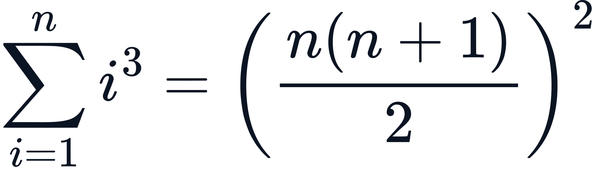

Write an expression
Use AsciiMath for a single formula and see a live preview as you edit.
Try a simple expression →FORMULA TO SCALABLE VECTOR GRAPHICS
Write AsciiMath. Define style. Share anywhere.
Turn mathematical expressions and styled HTML into SVG and JPEG images. Your source travels in a self-contained permanent URL, ready to share and reuse.
Live deployment: permaformula.kozow.com

FROM EXPRESSION TO IMAGE
Use AsciiMath for a single formula and see a live preview as you edit.
Try a simple expression →Combine formulas with HTML and CSS. Adjust the canvas width, colors and typography.
Open the composer →Copy permanent SVG or JPEG links. Browse the public library and restore source for further editing.
Explore the library →OPEN SOURCE · MIT LICENSE
Render expressions directly through HTTP endpoints, or encode HTML, CSS and layout into a compressed UBCQ descriptor. Run PermaFormula locally or with Docker.